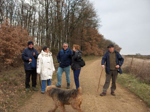
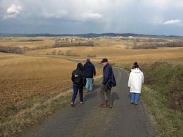

__________________________________
Compte rendu de la sortie du 3/3/2005
Sortie marche autour de Goudouvielle
__________________________________ Liste des présents


|
MM mes
Danièle Linel
Jacqueline Vignaux
MM.
Jean Lagorce Jacques Rigal Sébastien Sanchez
André Vignau
Lou le chien de Jean
Pas de soleil, pas de lézards......... Le message est bien passé. Cependant, si l'organisation peut éventuellement choisir les sorties en fonction de la météo prévue, elle ne peut, pas plus que les professionnels du genre, garantir le soleil ou la pluie à 100%, et c'est ainsi que nous avons eu le soleil... et la pluie, avec en prime des averses de grésil. L'atmosphère était pourtant limpide, et nous avions de superbes points de vues sur le paysage et sur les grains qui venaient à notre rencontre. Le circuit est joli, avec des passages en ligne de crête des vallons gersois, les chemins un peu boueux seront plus praticables si nous les refaisons avec un temps plus sec.
JR
|